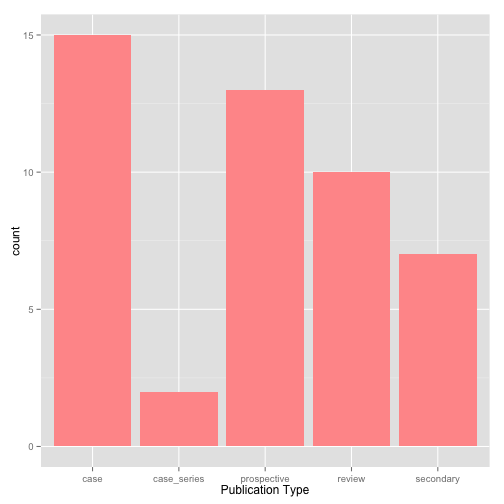
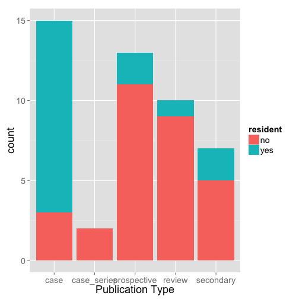
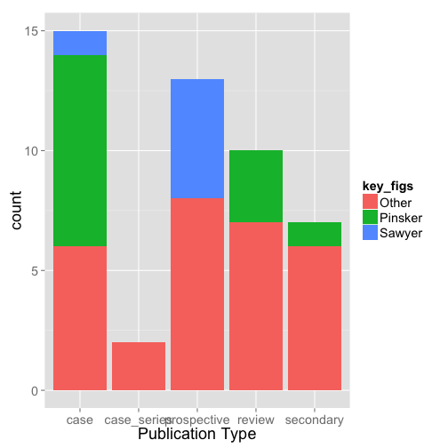
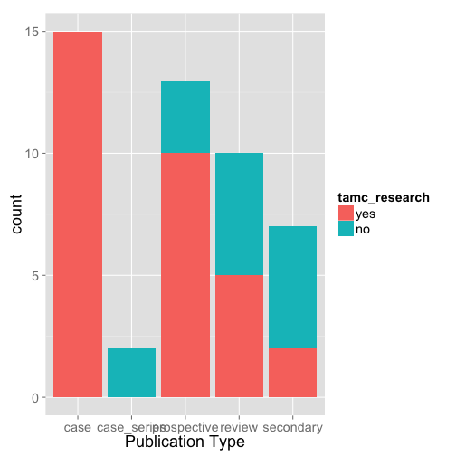
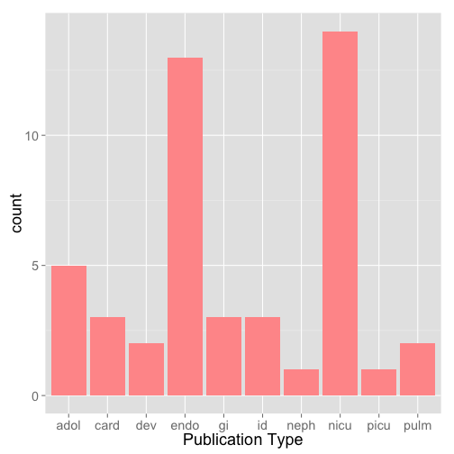

- Increase productivity of researchers in department
- Provide opportunities for new/current department members to perform research
- Develop knowledge base of research resources at Tripler
Michael Ching, MD, MPH, FAAP



## Factor w/ 2 levels "no","yes": 1 1 2 1 2 2 2 2 1 1 ...


Make table of Internal, Local, National Posters
Note not complete list since some residents presented nationally last year (i.e., Amisha Patel)